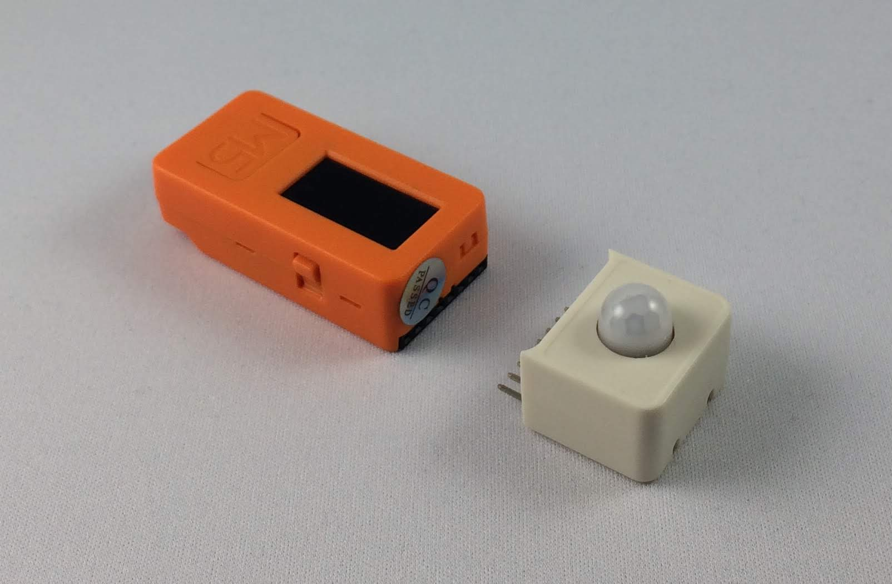
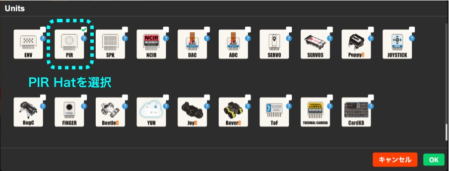
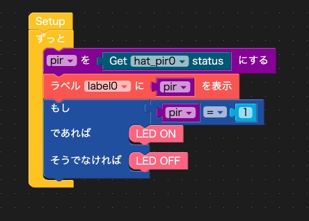
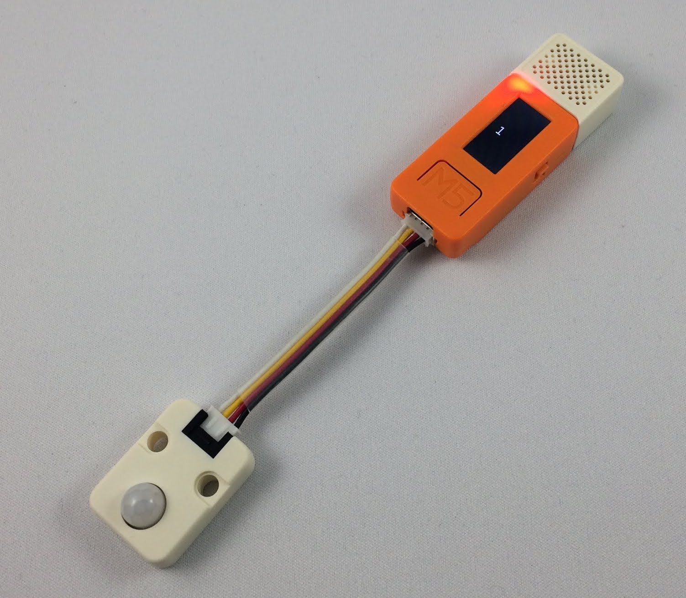
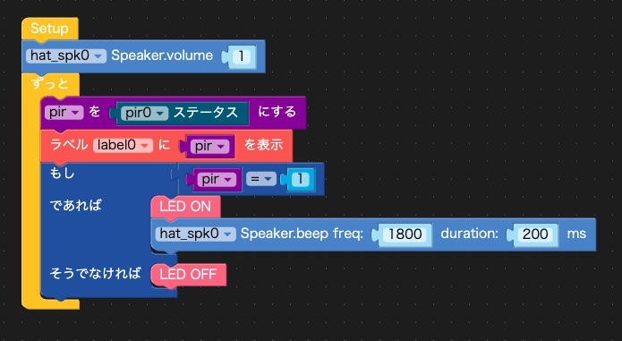
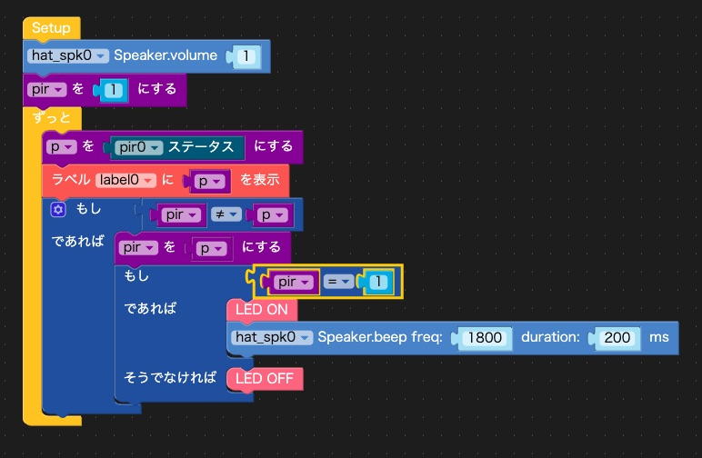

M5StackやM5StickCを使って、面白いことをするコーナー「M5Stackカフェ」。第6回はM5StickCを使って人の動きを感知するものを作ります。
人が近づくと自動的に点灯する防犯用の外灯とか、トイレに入ると自動的に点灯するライトや換気扇など、人の動きを感知して作動するものはいろいろあります。これらには人感センサと呼ばれるセンサが使われています。人感センサは人などが発する赤外線の「変化」、つまり人の動きを感知するセンサです。トイレに入って自動的にライトが点灯したあと、しばらくジッとしているとライトが消えてしまったことを経験した方もいるかと思います。これは人感センサが赤外線の「変化」を検出しているためで、トイレでジッとしていると赤外線は発していても、変化しないので、人感センサが人を検出できなくなるからです。少し動くと赤外線が変化し、人感センサが再び人を検出してライトを点けてくれます。
M5StickCには「M5StickC PIR Hat（AS312搭載）」という人感センサHatがあります。PIRはPassive Infrared Ray（パッシブ赤外線）の略で、自らは赤外線を出さず、受信するだけなのでパッシブ赤外線センサと呼ばれます。また、M5StackとM5StickCの両方で使える「M5Stack用PIRセンサユニット」もあります。これはGroveポートに接続するタイプで、名前には「M5Stack用」とありますが、M5StickCでも使えます。
今回は最初の作例では「M5StickC PIR Hat（AS312搭載）」を、次の作例では「M5Stack用PIRセンサユニット」を使います。
まず、人感センサの動きを調べてみましょう。
ハードウェアは、M5StickCに「M5StickC PIR Hat（AS312搭載）」を刺すだけです。

今回もプログラムはUIFlow(Blockly)で作ります。UIFlow(Blockly)を使う準備方法は第1回の記事を、UIFlowの操作方法は第2回の記事も合わせてご覧ください。
M5StickCの充電を兼ねてUSBケーブルでM5StickCとパソコンをつなぎ、パソコンのブラウザで次のアドレスにアクセスします。
第3回の記事を参考にしてAPIキーを確認して、UIFlowとM5StickCを接続します。
これでUIFlowでM5StickCのプログラムを作る準備は完了です。
では、UIFlowで「M5StickC PIR Hat（AS312搭載）」にアクセスしてみましょう。
「Hat」を選択して「＋」をクリックし、Hatの一覧から「PIR」を選んで「OK」をクリックします。

真ん中のメニューの「HAT」を選択し、「PIR」をクリックすると、「Get hat_pir0 status」というブロックが現れます。次の図のようにLCDの上に「Label」をドラッグ＆ドロップし、右側のプログラムエリアでPIR Hatの値をLabelに表示します。

画面右上の右三角の実行ボタンをクリックして、プログラムを動かしてください。体を動かさなければLCDに「0」が表示されます。人感センサの前で体を動かすと、1〜2秒遅れてLCDに「1」が2〜3秒表示されます。人感センサは人の動きがないときは値が「0」、動きを感知すると2〜3秒間値が「1」になることが確認できました。
人感センサの動きがわかったので、人が近づいたらLEDを点けてみましょう。M5StickCの内蔵LEDを使います。
人感センサの値が0ならばLEDを消す、1ならばLEDを点けるという動作を繰り返せばよさそうです。
値によって処理を変えるには論理メニューの「もし〜であれば〜、そうでなければ〜」というブロックを使い、人感センサの値が「1」であれば「LEDをON」、そうでなければ「LEDをOFF」にします。

実行ボタンをクリックして、プログラムを動かします。体を動かすと内蔵LEDが点き、動きを止めるとLEDが消えるのが確認できます。防犯用の外灯は、人の動きを感知してから数秒間ライトが点灯します。同じような動作は、「LED ON」ブロックの下に「5秒停止」というブロックを付けることで実現できます。
次に人が近づいたらブザーで知らせるデバイスを作ってみましょう。M5StickCにはスピーカーが内蔵されていないので、スピーカーHat「M5StickC Speaker Hat（PAM8303搭載）」を使い、人感センサはGroveポートに接続する「M5Stack用PIRセンサユニット」を使います。

UIFlowで「Unit」を選択して「＋」をクリックし、Unitの一覧から「PIR」を選んで「OK」をクリックします。次に「Hat」を選択して「＋」をクリックし、Hatの一覧から「SPK」（スピーカー）を選んで「OK」をクリックします。
HATメニューの「Speaker」を選ぶと、「hat_spk0 Speaker.volume 1」というスピーカーの音量を設定するブロックがあります。また「hat_spk0 Speaker.beep freq: 1800 duration 200 ms」というブロックがあります。これはスピーカーを1800Hzの高さで200ミリ秒、つまり0.2秒間「ピッ」と鳴らすブロックです。この2つのブロックを使います。
Unitsメニューの「人感」には「pir0 ステータス」というブロックがあります。これが人感センサユニットの値を調べるブロックです。
これらのブロックを次の図のように組み合わせます。最初にスピーカーの音量を設定し、人感センサの値を調べて、値が「1」つまり人の動きが検出できたらLEDをONにして、スピーカーを「ピッ」と鳴らし、動きが検出できなければLEDをOFFにします。

実行ボタンをクリックして、プログラムを動かします。人感センサの前で体を動かすと、スピーカーから「ピーッ」と3秒ぐらい音がでました。これは、人感センサが人の動きを検出すると数秒間「1」の値になるためで、0.2秒の音を数秒間出し続け、「ピッ」ではなく「ピーッ」と音がでたのです。
これでもよければ、これでプログラムは出来上がりですが、あくまでも当初の目論見通り「ピッ」と音を出したい場合は、プログラムを次のように変更します。人感センサの値を「pir」という変数に保存しておきます。人感センサの現在の値（変数「p」）が保存した値「pir」と違ったら、「pir」の値を現在の値に更新し、その値が「1」ならLEDをONにしてスピーカーを「ピッ」と鳴らします。こうすると、人感センサの値が数秒間「1」が続いても、「0」から「1」に変わったときだけスピーカーが「ピッ」と鳴り、「1」が続く間はスピーカーは鳴らず、「1」から「0」に変わったときにLEDがOFFになります。

話が長くなってきたので、今回はこのくらいにします。
人の動きを感知して何かするというのは、防犯用の外灯やトイレの照明以外にもいろいろな応用が考えられそうです。私もカフェに1台設置して、お客さんがお店にみえたらブザーで知らせてくれるようにすれば、安心して居眠りができそうですｚｚｚ